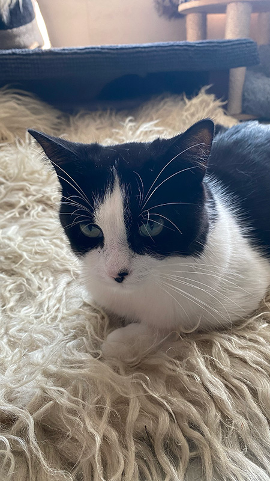

Koe
Ras: Europese Korthaar
Leeftijd: 4 jaar
Likes: Knuffels en dekentjes
Dislikes: Stofzuigers
Persoonlijkheid: Lief en eigenwijs
Bijzonder: Zwart vlekje op haar neus
Prrrrr... Welkom op de Poezenpagina! Hier vind je onze lieve, pluizige kapiteintjes die wachten op hun furr-ever thuis. Elke kat aan boord van de Poezenboot heeft zijn eigen unieke karakter en verhaal, en misschien ontmoet jij hier wel jouw nieuwe beste maatje. Neem snel een kijkje en laat je hart smelten. Wie weet springt er zo een nieuwe huisgenoot in je armen!
Ras: Europese Korthaar
Leeftijd: 4 jaar
Likes: Knuffels en dekentjes
Dislikes: Stofzuigers
Persoonlijkheid: Lief en eigenwijs
Bijzonder: Zwart vlekje op haar neus
Ras: Europese Korthaar
Leeftijd: 6 jaar
Likes: Klimmen
Dislikes: Onweer
Persoonlijkheid: Lief
Bijzonder: Kijkt boos
Ras: Europese Korthaar
Leeftijd: 3 jaar
Likes: Naar vogels kijken
Dislikes: Drukke geluiden
Persoonlijkheid: Rustig
Bijzonder: Heeft een klein hartvormig vlekje op haar buik
Ras: Grijs-wit gevlekt
Leeftijd: 2 jaar
Likes: Slapen
Dislikes: Nieuwe mensen
Persoonlijkheid: Heel speels
Bijzonder: Kijkt je altijd aan met een kleine glimlach
Ras: Europese Korthaar
Leeftijd: 4 jaar
Likes: Op schoot zitten
Dislikes: Geen aandacht krijgen!
Persoonlijkheid: Rustig
Bijzonder: Blind